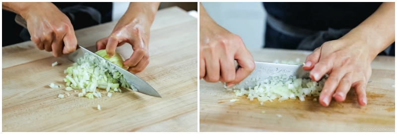
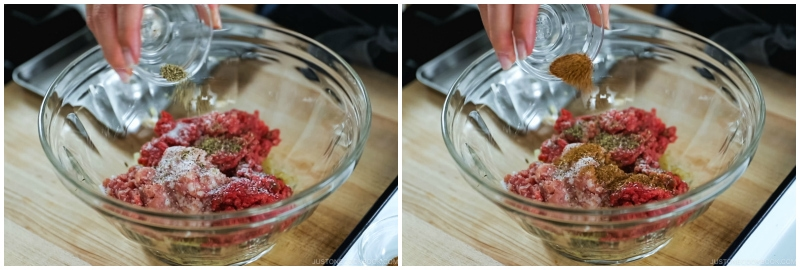
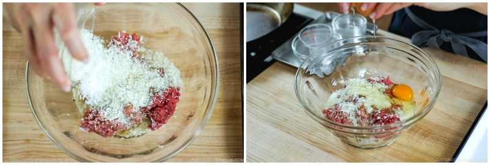

Home
Japanese Hamburger Steak (Hambagu)

Description:
Japanese style Hamburger Steak, popular in Yoshoku
(Japanese style western food)
Ingredients:
For Hambagu Patties:
- 0.5 onion
- 1 tablespoon neutral oil
- 340g ground beef and pork combination 2:1 or 3:1
- 0.5 teaspoon salt
- freshly ground black pepper
- 0.5 teaspoon nutmeg
- 20g panko
- 2 tablespoons of Milk
- 1 large egg
For Cooking Hambagu:
- 1 Tablespoon neutral oil
- 45ml red wine
For The Sauce:
- 14g unsalted butter
- 45ml ketchup
- 45ml tonkatsu sauce
- 45ml red wine
- 45ml water
Steps:
Important to note: simplified for project
- Mince the onion

- Add 1Tbsp neutral oil to hot pan and add the onion
- Saute until tender, transfer to bowl to cool
- Once its cool, add the meat combo into the bowl, the salt, the pepper and nutmeg

- Add the panko, milk and egg and start mixing

- divide into portions, let sit in fridge for 30 minutes
- cook them burgers
- There are more stages, but this is long enough
Home